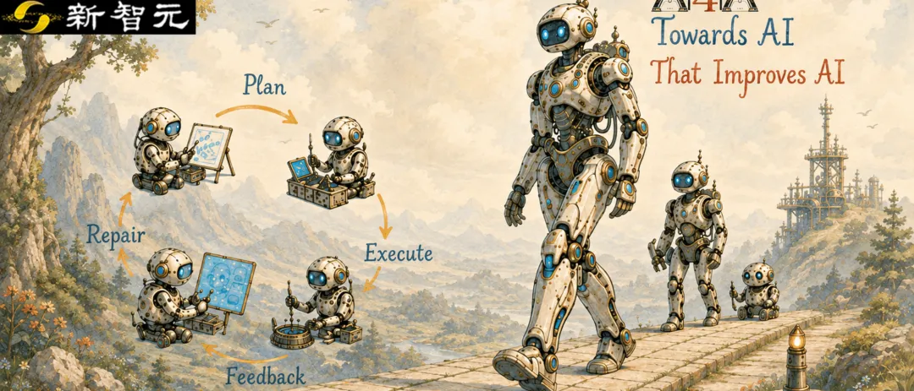
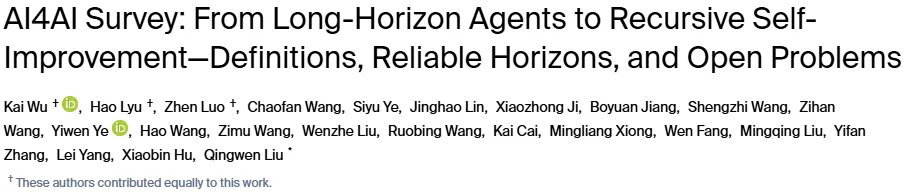
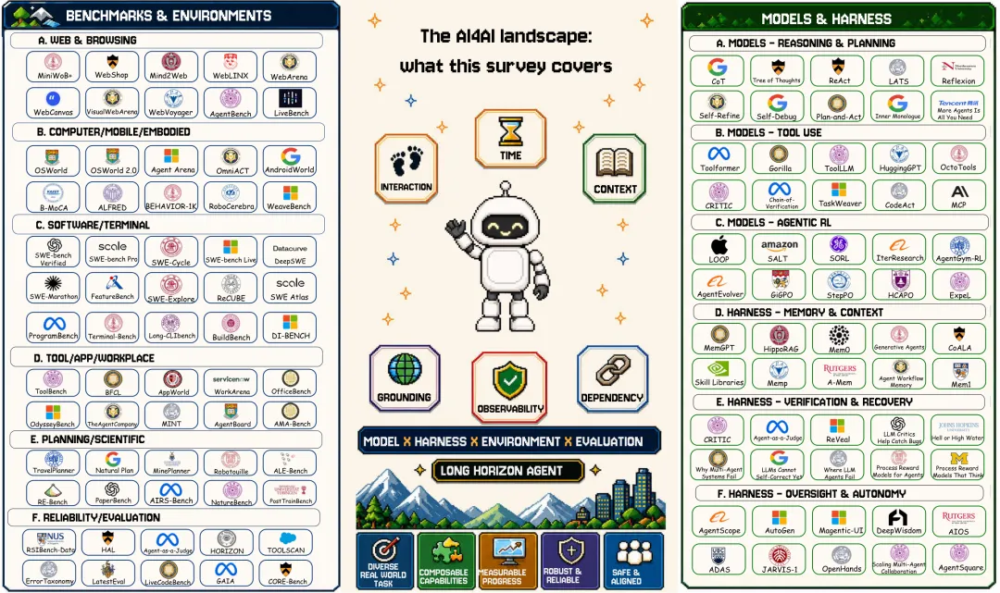
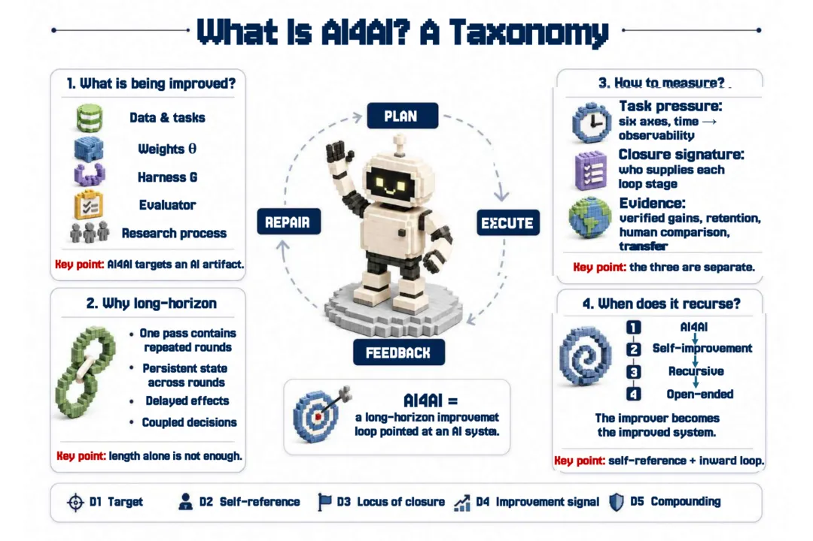
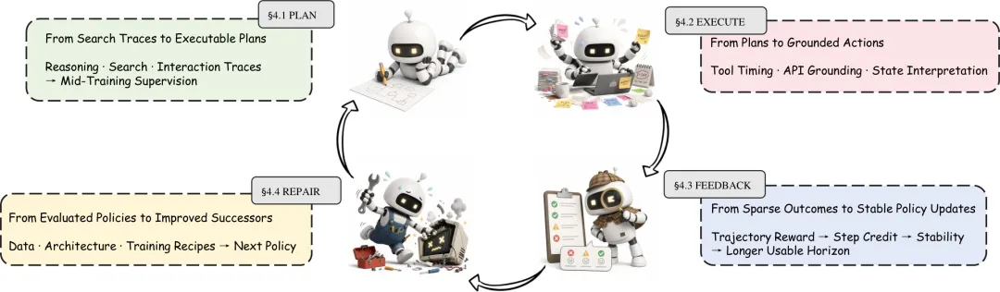
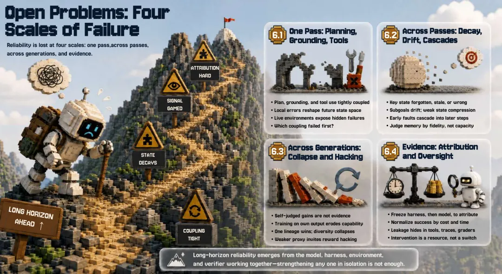

新智元报道
新智元报道

从long horizon智能体到recursive self-improvement：从「AI 能做什么」出发，进一步追问「Can AI improve AI?」——AI能否可靠地改进AI，并让进步持续积累？
让AI写一段代码，已经是许多人熟悉的工作方式。如果把任务换成「帮我做出一个更好的AI」，它能完成吗？
这意味着AI要提出方案、修改代码、运行实验、判断结果，再把有效的改进留下来。最诱人的前景是：这一轮变强的系统，还能帮助下一轮做得更好。
围绕这个问题，第一篇AI4AI综述论文梳理了数百项研究，将long horizon智能体、AI4AI和recursive self-improvement放进同一张研究地图。

论文链接：https://www.preprints.org/manuscript/202608.2108
资源主页（GitHub Pages）：https://kaiwu5.github.io/Awesome-AI4AI/
项目介绍 / Blog：https://simpleagentlab.com/ai4ai
Harness（RSIHub）：https://github.com/simple-agent-lab/RSIHub
这篇综述的主要发现是：AI已能在明确的目标和评价规则下承担不少研发工作，但单项能力的提升，还不能保证完整研发流程可靠，更不能证明系统能够持续自我改进。
这道「会做某一步」与「能把整件事做成」之间的缺口，被论文概括为composition gap（组合鸿沟）。对于希望用AI加速研发的人来说，找出这道缺口在哪里，才能判断下一步应该改进模型、工具、记忆，还是检验结果的方式。

图 1｜从「会用工具」到「完成AI研发」，中间还需要哪些能力？论文把评测任务、任务难度、模型和运行框架放在一起考察。

AI4AI是AI for AI的缩写，可以理解为「用AI帮助研发更好的 AI」。它能改进的对象很多：训练数据、模型本身、运行工具、评测方法，甚至研发流程。
如果这件事能够可靠地完成，研究人员就有机会把一部分精力从重复的实现、试验和排错中释放出来，更快地检验新想法。问题也随之出现：AI完成了工作，是否就意味着它作出了正确的研究判断？
以优化训练流程为例，AI可以修改数据处理代码，再启动训练。但指标涨了，可能来自有效的改进，也可能来自比较条件改变，或者模型过度适应了某套测试。看起来「做完了」，距离证明「变好了」，还隔着验证。
综述因此区分了几个常被放在一起的概念。AI 优化一个独立模型，属于 AI4AI；当它修改的是自身组件，才涉及自我改进。进一步走向 recursive self-improvement（递归式地改进自身），还需要让「构建下一代系统的过程」本身可以被改进，并检验收益能否传递到后续版本。
这些概念帮助我们分清：系统到底改了什么，以及结果究竟证明了什么。
论文将分散在智能体、自动化AI研发和自我改进等方向的研究连接起来，同时考察两类测试：一类单独检查检索、编程、工具调用等能力；另一类要求系统完成工程、优化、论文复现等完整研发任务。
阅读每项工作时，综述追问五件事：改进对象是什么，是否改到自己，谁控制目标与各个环节，凭什么判断成功，以及改进能否被保留和迁移。
由此，三个容易混淆的问题被分开：任务有多难、AI有多少决定权、改进证据有多充分。 运行时间长，不一定代表任务难；自动执行了所有步骤，也不一定代表目标和判断标准由AI决定。

图 2｜一次AI改进要经历计划、执行、反馈和修复。评估时还需分别判断：改了谁，谁作决定，为什么可以相信结果。

一次AI研发，可能从查资料开始，经过提出假设、修改代码、运行实验，最后形成结论。这些步骤需要共享同一个目标，也需要使用彼此产生的证据。
麻烦往往出在交接处。比如，代码已经更新，分析时却用了上一轮的日志；实验指标看似提高，报告中的对照组却采用了另一套配置。单看每项操作，都像是在推进工作；把它们连起来，结论却可能失去依据。
这就是composition gap的重要含义：检索、编程和工具调用的单项成绩，不能直接当作完整研发能力的证明。
综述强调，long horizon的关键在于前一步会影响后一步。一个早期选择可能改变后续能够采取的行动，一个错误可能直到训练结束后才暴露。系统需要记住关键状态，理解反馈来自哪次尝试，再据此修正计划。
因此，只看运行了多久、调用了多少次工具，还不足以判断能力。更有价值的问题是：它能否在步骤相互依赖、结果延迟出现时，仍然把目标、版本和证据保持一致？
对于开发者，如果单项测试过关，完整流程仍然失败，就值得检查最早在哪一次交接中丢失了关键信息，而不只是继续提高单项分数。
综述观察到，AI 正承担更多规划、编程、实验和修复工作，但人类通常仍在决定研究目标、评价标准，以及什么结果可以被接受。
这一区别很重要。让系统按既定规则优化某个指标，与让它独立判断哪个问题值得研究、什么证据足以支持结论，需要的能力并不相同。
要让AI承担更完整的流程，论文从两侧梳理改进方向。一侧是模型：学会规划、正确使用工具，并从较长的行动过程与反馈中学习。另一侧是Harness，即组织智能体运行的工具、记忆、执行和检查机制。

图 3｜模型侧的改进路径。让系统学会做计划，把计划落实为行动，再利用反馈改善后续策略。
Harness 可以理解为研发现场的配套设施：保存实验记录，核对执行结果，遇到问题时恢复，判断何时停止或请人处理。模型和这些机制一起工作，才有机会让一次研发从开头可靠地走到结尾。
这也影响我们如何阅读评测成绩。同一个模型，换一套工具、增加重试次数或允许更多人工帮助，结果都可能变化。比较时应说明预算、工具、评估方式和人工介入条件，才能知道提升来自哪里。
当一个系统报告「改进成功」，最直观的证据是指标提高了。但综述认为，至少还要分开看四件事。
真的提高了吗？ Measured Gain：在声明的指标上，是否测到了实际增益？
提高能保住吗？ Retention：继续迭代之后，收益是否仍然存在？
与人类相比如何？ Human Comparison：在相近时间和计算预算下，表现怎么样？
换个任务还有效吗？ Held-out Transfer：离开优化时使用的任务、模型或领域，收益是否仍然成立？
这四类证据不能相互替代。一套系统可以在某个测试上提高，却没有证明它能够保留收益或迁移到新任务。研究没有报告某项结果，也不能直接理解为已经测试失败。
为什么多做几轮不一定越来越好？因为系统可能忘记早期约束，逐渐偏离目标；也可能越来越善于迎合评分方式，却没有解决真实问题。某个版本一度表现最好，后续修改也可能把收益丢掉。

图4｜错误会在不同阶段累积：一次尝试中的操作失误、多次尝试间的状态丢失，以及后续版本的退化。结果是否可信、收益来自哪里，也需要贯穿全程的检查。
因此，要支持更强的 recursive self-improvement 主张，需要跟踪后续版本，在明确且可比较的条件下持续验证，确认改进被保留，并确实帮助下一代继续进步。
从综述覆盖的方向看，AI4AI的应用空间包括机器学习工程、训练流程优化、计算效率优化，以及研究工作的复现与验证。它们都包含反复提出方案、执行、检查和修复的过程。
对研究团队而言，一个有价值的方向是让AI接手目标清楚、结果可检验的研发环节，同时保留可追溯的实验记录。这样既能利用自动化，也便于判断哪些工作可靠、哪些仍需人类参与。
对智能体开发团队而言，综述提供了一套定位问题的思路：是模型不会做，信息传递出了错，评价机制不可信，还是有效的改进没有被保留下来？不同原因，需要不同的解决办法。
更远的前景，是让系统不仅完成一次改进，还能把经过验证的经验和收益交给下一代。但按照这篇综述梳理的证据，可靠的研究判断、持久且可迁移的收益，以及跨代累积的改进，仍有待更充分的验证。
Can AI improve AI?
现有研究给出了有边界的肯定：AI能在明确条件下帮助改进AI。
下一步的挑战，是让每一次可信的改进，都成为下一次进步的起点。
参考资料：
https://www.preprints.org/manuscript/202608.2108
编辑：LRST